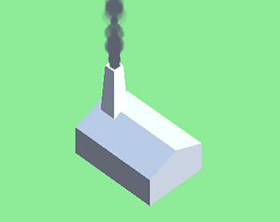

Unity C# Projects
Black Hole Unknown - a 2d shooter game developed in Unity
A 2d space invaders game developed utilising a range of design patterns such as: Object Pooling for projectiles, Command pattern for userinput, Observer pattern to decouple unrelated systems, State pattern for player movement sprites and many more!
View Git Repository
Play on itch.io

Copper Game - an educational tycoon management game developed in Unity
This is a game I developed and demoed to aid teaching history about the Swansea Copperworks in a more engaging way. Required using vector maths to control the camera and position buildings, using tweening libraries such as DOTween for ship animations and using NavMesh agents for worker path finding just to name a few.
Play on itch.io